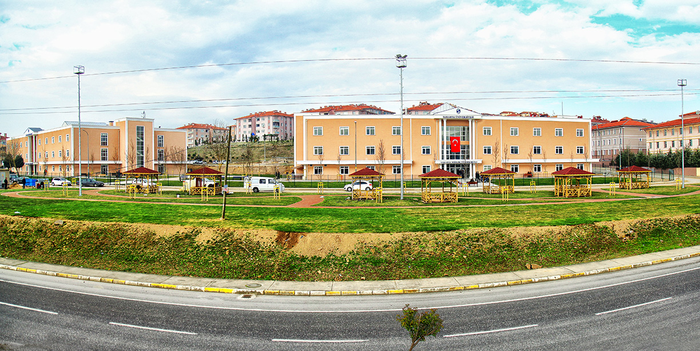
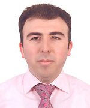
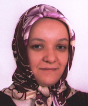
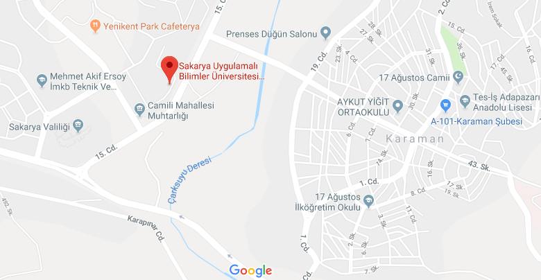

Sakarya Meslek Yüksekokulu
Bilgisayar Programcılığı
BÖLÜM HAKKINDA |
AKADEMİSYENLER |
DERSLER |
İLETİŞİM

Hoşgeldiniz
1970 li yıllarda İstanbul Teknik Üniversitesi tarafından kullanılan binada hala eğitim öğretime devam etmekteyiz. O yıllarda mühendislik fakültesi olarak kullanılan binamızda verilen eğitimler hem bölgede hem de ülkede ses getiren çalışmaların alt yapısını oluşturmaktadır.
Sitemiz 20.03.2014 tarihinde İnternet Programcılığı dersinde tasarlanmıştır. Amacımız, Sakarya Üniversitesi, Sakarya Meslek Yüksekokulu biriminde bulunan Bilgisayar Programcılığı Programını tanıtmaktır.
Mümkün olduğunca güncel bilgiler vermek istediğimiz için sitemiz gerek görünüm gerekse de içerik olarak sık sık değişikliğe uğrayacaktır.
Bilgisayar Programcılığı, daha çok bilgisayar programcısı yetiştirmeyi amaçlamasına rağmen, 2012 yılından itibaren de tasarım yönünü güçlendirmeye çalışmaktadır.
Bölüm mezunlarımız dikey geçiş, mesleğe başlama, bir iş yeri kurma gibi avantajlara sahip olmaktadırlar.

Bölüm Hakkında
Bölüm, 1999 yılında kurulmuştur. Günümüze kadar toplamda 214 öğrenci bölümden mezun olmuş durumdadır. Mezunlarımızın %22 si dikey geçiş ile değişik fakültelere geçmişlerdir.
Bölümde şu anda beş akademisyen bulunmakta olup, Sakarya Meslek Yüksekokulunda 5 bilgisayar laboratuvarında öğrenciler uygulama imkânı bulmaktadırlar.
Bölümde okutulan dersler uzman eğitimciler tarafından yapılan bir araştırma ile piyasaya uygunluğu %82 ile Türkiye çapında yüksek bir orana kadar uzanmıştır.
Yapılan son çalışma ve projelerde özellikle Bilgisayar Programcılığı bölümünde okuyan öğrencilerin bir akademi mezunu olabilmeleri için CISCO Akademi ile bazı protokol çalışmaları yapılmaktadır.
Derslerimizde HTML5, Jquery, JavaScript, Asp.Net Mvc, CodeIgniter ile PHP programlama, Mobil Programlama, Bilgisayar Ağları ve Ağ Güvenliği, Görsel Programlama ağırlıklı derslerimizdir. Bunun yanında Bilgisayar Donanımı, Kablosuz Teknolojiler, Bilgisayarlı Kontrol Uygulamaları, İşletim Sistemleri gibi derslerle öğrencilerimiz desteklenmektedir.
Akademisyenler
Bölümde en önemli yapı taşlarından olan eğitmenler bakımından hem deneyim hemde bilgi birikimi açısından son derece şanslı olan bir bölüm olarak kendimizi görebiliriz. Çünkü dört akademisyen okulumuzdaki pek az bölümde olmakla birlikte akademisyenlerimizin özellikle özel sektör ve ders verme tecrübelerinin olması ayrı bir kazanımdır.

Dr. Öğr. Üyesi Serkan DERELİ,
Gazi Üniversitesi Bilgisayar Sistemleri Öğretmenliği,
Web programlama konularında uzmandır.
 Öğr. Gör. İsmail ÖYLEK,
Selçuk Üniversitesi Bilgisayar ve Öğretim Teknolojileri,
Algoritma ve görsel programlama konularında uzman.
Öğr. Gör. İsmail ÖYLEK,
Selçuk Üniversitesi Bilgisayar ve Öğretim Teknolojileri,
Algoritma ve görsel programlama konularında uzman.
 Öğr. Gör. Gözde GÖKPINAR,
Bilken Üniversitesi, Bilgisayar ve İstatistik bölümü mezunu.
Veri Yapıları ve Java programlama konularında uzman.
Öğr. Gör. Gözde GÖKPINAR,
Bilken Üniversitesi, Bilgisayar ve İstatistik bölümü mezunu.
Veri Yapıları ve Java programlama konularında uzman.

Gazi Üniversitesi, Bilgisayar Sistemleri Öğretmenliği mezunu.
Web ve Veritabanı derslerinde uzman.
 Sakarya Üniversitesi, Endüstri Mühendisliği mezunu.
Bilgisayar ağları ve bilgi güvenliği konularında uzman.
Sakarya Üniversitesi, Endüstri Mühendisliği mezunu.
Bilgisayar ağları ve bilgi güvenliği konularında uzman.
Bölüm Dersleri
Okulumuzda 3+1 eğitim modeli uygulandığından dolayı piyasanın personellerde aradığı akademik bilgi ve becerileri kazandırmak zorunda olduğumuzdan dolayı genel anlamda piyasada kullanılan bilgileri kapsayan dersler bölümümüzde okutulmaktadır.
I. Yarıyıl
- Algoritma ve Programlamaya Giriş
- Bilgisayar Donanımı
- Ofis Yazılımları
- Grafik Tasarım
- Web Tasarım Temelleri
II. Yarıyıl
- Veritabanı Yönetim Sistemleri
- İnternet Programcılığı I
- Görsel Programlama I
- Veri Yapıları ve Programlama
- Bilgisayar Ağları
III. Yarıyıl
- Görsel Programlama 2
- İnternet Programcılığı 2
- İşletim Sistemleri
- Mobil Programlama
- Ağ ve Bilgi Güvenliği
İletişim
Öğrencilerimizin eğitim öğretim görmüş oldukları binamız,
üniversitemizin ilk kurulduğu yıllarda kullanılan bir bina olduğu için
en çok bilinen bir mekândır. Aynı zamanda merkeze 1 km mesafede
bulunması ve bütün minibüs, dolmuş ve otobüs güzergâhları üzerinde
olması önemli bir avantajdır.
Sakarya Meslek Yüksekokulu
Adres: Camili 15 Temmuz Mahallesi Üniversite Caddesi
A Blok No:3 B Blok No:5 54290 Camili-Adapazarı/SAKARYA
Telefon: 0 264 295 12 55
Faks: 0 264 295 12 88
Email: smyo@sakarya.edu.tr
